온실가스관리기사 (2021-09-12 기출문제)
1과목: 기후변화개론
1. 온실가스 배출원/흡수원과 온실가스 종류가 알맞게 짝지어지지 않은 것은?
- 장내발효 : CH4
- 농경지 토양 : N2O
- 벼 재배 : CO2
- 산림지 : CO2
(정답률: 65%)

2. 2015년 유엔기후변화협약의 제21차 당사국총회에서 채택된 파리협정에 대한 내용이 아닌 것은?
- 교토의정서의 경우 주요 선진국에 한해서 온실가스 감축의무가 주어지지만 파리협정에서는 모든 국가가 감축의무를 가진다.
- 파리협정은 각국의 온실가스 감축목표를 스스로 정하는 상향식 체제로서 목표의 설정은 자율적으로 하되 감축목표를 이행하지 못할 경우에는 제재할 수 있도록 국제법적 구속력을 부과하였다.
- 협약을 비준한 국가들의 온실가스 배출총량이 전 세계 온실가스 배출량의 55% 이상이며55개국 이상이 비준할 경우에 한하여 협약이 발효되며, 2016년 11월 4일에 공식 발효되었다.
- 파리협정은 각 당사국 사이의 폭넓은 온실가스 감축사업의 추진과 거래를 인정하는 등 자발적인 협력을 포함하는 다양한 형태의 국제탄소시장(IMM)매커니즘 설립에 합의하였다.
(정답률: 63%)
3. 전 지구 기후변화 시나리오 “순차접근”의 순서로 가장 적합한 것은?
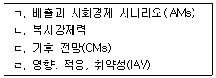
- ㄱ→ㄴ→ㄷ→ㄹ
- ㄷ→ㄴ→ㄹ→ㄱ
- ㄷ→ㄹ→ㄴ→ㄱ
- ㄴ→ㄱ→ㄹ→ㄷ
(정답률: 66%)
4. CDM사업관련 주요기관의 기능 및 역할에 관한 설명으로 ( )에 가장 적합한 기관은?
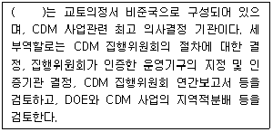
- 국가 CDM 승인기구(DNA)
- CDM 사업운영기구(DOE)
- CDM 집행위원회(EB)
- 당사국총회(COP/MOP)
(정답률: 68%)
5. 온실가스 배출량이 많은 업종부터 적은 업종 순으로 배열한 순서가 맞는 것은?
- 발전에너지→운수→정유→철강
- 발전에너지→철강→정유→운수
- 철강→발전에너지→정유→운수
- 철강→발전에너지→운수→정유
(정답률: 57%)
6. 신에너지 및 재생에너지개발 이용보급 촉진법령상 신에너지에 속하지 않는 것은?
- 수소에너지
- 바이오에너지
- 석탄액화ㆍ가스화
- 연료전지
(정답률: 59%)
7. 기후변화 취약성 평가 방법 중 지역에 기반을 둔 여러 지표들을 바탕으로 하여 그 시스템의 적응능력을 평가함을써 사회ㆍ경제적인 취약성을 파악하는 방법은?
- 좌향식 접근법
- 하향식 접근법
- 우향식 접근법
- 상향식 접근법
(정답률: 59%)
8. CO2=1로 볼 때, 지구온난화지수 (GWP)가 가장 큰 온실가스는? (단, GWP는 IPCC 2차 평가보고서의 지속기간 100년 기준)
- HFC-23
- HFC-125
- HFC-245ca
- PFC-14
(정답률: 62%)
9. 온실가스ㆍ에너지 목표관리제에 대한 설명으로 틀린 것은?
- 온실가스ㆍ에너지 목표관리제도는 소규모 사업장의 온실가스 감축, 에너지 절약목표를 설정하고 관리하는 제도로 ‘저탄소 녹색성장 기본법’의 온실가스 감축정책 중 하나이다.
- 온실가스ㆍ에너지 목표관리제 운영은 관리업체 지정, 목표설정, 산정ㆍ보고ㆍ검증, 검증기관 관리 등에 관한 사항을 포괄적으로 담고 있다.
- 온실가스ㆍ에너지 목표관리 운영지침을 제정하면서 국제사회에 통용될 수 있는 온실가스 산정ㆍ보고ㆍ검증체계를 구축하는데 주력한다.
- 에너지 목표관리 운영지침의 주요 내용은 원자력 기술개발 확대, 온실가스 배출 감축기술 개발, 기초ㆍ원천기술 개발, 연구개발 투자의 전략 강화 및 종합 조정기능 보강 등이 포함되어 있다.
(정답률: 54%)
10. 화석연료 사용으로 인해 발전소, 철강, 시멘트 공장 등 대량발생원으로부터 배출되는 이산화탄소를 직접 효율적으로 줄일 수 있는 기술의 70~80%를 차지하는 핵심 기술로서 크게 ‘연소 후 회수기술’, ‘연소 전 회수기술’, 그리고 ‘순 산소 연소기술’로 구분되는 것은?
- 저장기술
- 수송기술
- 포집기술
- 전환기술
(정답률: 75%)
11. 극지방의 빙하가 녹게 되면 눈과 얼음에 덮여 있던 육지와 수면이 드러나 지구 표면의 온도 상승을 가속화시키게 되는데 그 이유를 바르게 설명한 것은?
- 해수면을 상승시키기 때문에
- 지구의 알베도(Albedo)를 증가시키기 때문에
- 빙하가 융해될 때 잠열이 발생되기 때문에
- 지구의 알베도(Albedo)를 감소시키기 때문에
(정답률: 64%)
12. 기후변화에 대한 정부간 패널(IPCC)의 실행그룹 중 기후변화의 영향평가와 적응 및 취약성 분야의 역할을 담당하는 것은?
- Working Group 1
- Working Group 2
- Working Group 3
- Task Force
(정답률: 66%)
13. 기후협화협약 당사국총회의 주요내용에 대한 설명으로 가장 적합한 것은?
- COP7(마라케시) : 교토메카니즘, 의무준수체제, 흡수원 등에 대한 합의
- COP13(발리) : 지구온도 2℃ 상승 억제 재확인 및 2⑤0년까지 장기 감축목표에 노력
- COP15(코펜하겐) : 선진국과 개도국이 모두 참여하는 새로운 기후변화 체제 마련에 합의
- COP18(도하) : 교토의 정서를 2022년까지 연장 합의
(정답률: 48%)
14. 미래 기후변화의 영향에 관한 설명으로 가장 거리가 먼 것은?
- 난대성 상록 활엽수인 후박나무는 북부지역으로 확대된다.
- 꽃매미, 열대모기 등 북방계 외래곤충이 감소하고 고온으로 인해 병해충 발생가능성이 감소된다.
- 농업에 있어서는 생산성 감소의 위협과 신영농기법 도입의 기회가 공존한다.
- 산업전반에서는 산업리스크 증가와 새로운 시장 창출 기회가 공존한다.
(정답률: 73%)
15. 21세기에 발생할 것으로 예상되는 이상기후 현상으로 가장 거리가 먼 것은?
- 집중적인 호우
- 중위도 지역 폭풍의 강도 증가
- 대부분 중위도 내륙에서의 혹서피해와 한발 위험증가
- 최고 기온의 하강, 무더운 일수와 혹서기간의 감소
(정답률: 75%)
16. 다음 설명에 해당하는 기체는?
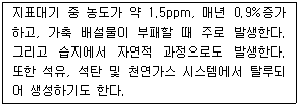
- 오존
- 메탄
- 이산화탄소
- 아산화질소
(정답률: 75%)
17. 교토의정서 상에서 6대 온실가스가 아닌 것은?
- 염화불화탄소
- 수소불화탄소
- 과불화탄소
- 육불화황
(정답률: 67%)
18. 기후시스템에 대한 내용 중 틀린 것은?
- 기후변화는 기후시스템의 과정에 대응하여 일어난다.
- 기후강제력은 기후시스템을 움직이는 요소이다.
- 기후시스템을 구분할 때 화산폭발은 내적요인에 해당한다.
- 대기는 기후특성을 가장 분명하게 보여주는 기후 구성 요소이다.
(정답률: 60%)
19. 교토의정서에 대한 설명으로 가장 거리가 먼 것은?
- 1997년 일본 교토에서 개최된 기후변화협약 제3차 당사국 총회에서 채택되고 20⑤년 2월 16일 공식 발효되었다.
- 한국은 2002년 11월 국회의 비준을 얻었으며, 제3차 당사국 총회에서 부속서-I 국가로 분류되어 온실가스 감축 의무를 부여받았다.
- 감축의무이행 당사국이 온실가스 감축 이행시 신축적으로 대응하도록 하기 위하여 배출권거래제(ETS), 공동이행(JI), 청정개발 체제(CDM) 등의 신축성 기제를 도입하였다.
- 공동이행(JI)은 부속서-I 국가가 다른 선진국의 온실가스 감축사업에 참여하여 얻은 온실가스 감축실적을 자국의 온실가스 감축목표 달성에 이용하는 제도이다.
(정답률: 66%)
20. 유엔기후변화협약(UNFCCC)의 주요기준이 되는 원칙으로 가장 거리가 먼 것은?
- 과학적 확실성의 원칙
- 공통이지만 차별화된 책임의 원칙
- 각자 능력의 원칙
- 사전예방의 원칙
(정답률: 62%)
2과목: 온실가스 배출의 이해
21. 온실가스 배출권거래제의 배출량 보고 및 인증에 관한 지침상 촉매를 활용한 수증기 개질로암모니아를 생산하는 공정이다. ( )에 알맞은 것은?
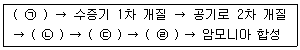
- ㉠ 천연가스 탈황, ㉡ 이산화탄소 제거, ㉢ 메탄화, ㉣ 일산화탄소의 전환
- ㉠ 일산화탄소의 전환, ㉡ 천연가스 탈황, ㉢ 메탄화, ㉣ 이산화탄소 제거
- ㉠ 이산화탄소 제거, ㉡ 천연가스 탈황, ㉢ 메탄화, ㉣ 일산화탄소의 전환
- ㉠ 천연가스 탈황, ㉡ 일산화탄소의 전환, ㉢ 이산화탄소 제거, ㉣ 메탄화
(정답률: 70%)
22. 우리나라 건축물의 온실가스 배출 벤치마크 계수 개발 시 적용되는 배출량의 범위로 맞는 것은?
- 간접배출만 반영
- 직접배출만 반영
- 간접 및 직접배출 모두 반영
- 건축물의 용도에 따라 다름
(정답률: 66%)
23. 다음은 철강 생산공정 온실가스 배출량 산정 방법 중 물질수지법(Tier 3)이다. 각 인자의 설명으로 맞는 것은?
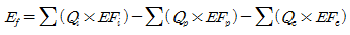
- Qi : 공정에 투입되는 각 원료 사용량(ton)
Qp: 공정에서 배출되는 각 부산물 반출량(ton)
Qe : 공정에서 생산되는 각 제품 생산량(ton) - Qi : 공정에서 생산되는 각 제품 생산량(ton)
Qp: 공정에서 배출되는 각 부산물 반출량(ton)
Qe : 공정에투입되는 각 원료 사용량(ton) - Qi : 공정에서 생산되는 각 제품 생산량(ton)
Qp: 공정에 투입되는 각 원료 사용량(ton)
Qe : 공정에서 배출되는 각 부산물 반출량(ton) - Qi : 공정에 투입되는 각 원료 사용량(ton)
Qp: 공정에서 생산되는 각 제품 생산량(ton)
Qe : 공정에서 배출되는 각 부산물 반출량(ton)
(정답률: 65%)
24. 다음 중 목표관리제 보고대상이 아닌 것은?
- 에어로졸 사용단계에서의 HFCs
- 에어컨 생산단계에서의 HFCs
- 전기설비 사용단계에서의 SF6
- 발포제 생산단계에서의 HFCs
(정답률: 64%)
25. 온실가스 배출거래제의 배출량 보고 및 인증에 관한 지침상 이동연소(도로) 부분의 보고대상 배출시설 중 “소형 화물자동차” 기준에 해당하는 것은?
- 배기량이 1000cc 미만으로서 길이 3.6미터ㆍ너비 1.6미터ㆍ높이 2.0미터 이하인 것
- 최대적재량이 0.8톤 이하인 것으로서, 총중량이 5톤 이하인 것
- 최대적재량이 1톤 이하인 것으로서, 총중량이 3.5톤 이하인 것
- 최대적재량이 3톤 이하인 것으로서, 총중량이 5톤 이하인 것
(정답률: 80%)
26. 이동연소(도로)의 온실가스 배출량 산정방법에 대한 설명으로 가장 거리가 먼 것은?
- Tier 1 방법은 연료 종류별 사용량을 활동자료로 하고 기본 배출계수를 이용하여 배출량을 산정하는 방법으로, CO2, CH4, N2O에 대해 산정한다.
- Tier 2 방법은 연료 종류별, 차종별, 제어기술별 연료사용량을 활동자료로 하고, 국가 고유 계수를 적용하여 배출량을 산정하는 방법이며, CO2, CH4, N2O에 대해 산정한다.
- Tier3 산정방법은 차량의 주행거리를 활동자료로 하고, 차종별, 연료별, 배출제어 기술별 고유 배출계수를 개발ㆍ적용하여 산정하는 방법이며, CO2, CH4, N2O에 대해 산정한다.
- 이동연소(도로) 부분의 경우 Tier 4 연속측정법은 현재 개발되어 있지 않다.
(정답률: 47%)
27. 인산 생산에서 배출되는 온실가스는?
- CO2
- CH4
- N2O
- CH4N2O
(정답률: 63%)
28. 혐기성 소화조의 소화효율 저하 원인과 가장 거리가 먼 것은?
- pH 저하
- 알칼리제 주입
- 소화조 내 온도 저하
- 독성물질 유입
(정답률: 62%)
29. 고정연소(기체연료) 온실가스 배출량 산정 방법론에 적용되는 산화계수에 대한 설명 중 틀린 것은?
- Tier 1의 산화계수는 기본값인 1.0이다.
- Tier 2의 산화계수는 0.995이다.
- Tier 3의 산화계수는 0.990이다.
- Tier 4는 연속측정방식으로 산화계수 값을 정하지 않는다.
(정답률: 52%)
30. 온실가스 배출권거래제의 배출량 보고 및 인증에 관한 지침상 고형폐기물의 생물학적 처리와 관련한 배출시설에 해당하지 않는 것은?
- 사료화 시설
- 분뇨처리시설
- 퇴비화 시설
- 부숙토 생산시설
(정답률: 63%)
31. 국내 목표관리제의 소각시설에서 발생하는 온실가스 산정방법 특성이 아닌 것은?
- CO2 배출량 산정은 활동자료인 폐기물의 소각량과 총탄소의 건조 탄소함량비율에 의해 결정된다.
- 바이오매스 폐기물(음식물, 목재 등)의 소각으로 인한 CO2배출은 생물학적 배출량이므로 배출량 산정 시 제외되어야 한다.
- non-CO2(CH4 및 N2O)의 경우에는 제시된 배출계수 또는 측정을 통하여 배출량을 산정한다.
- 국내 목표관리제에서 고상과 액상폐기물의 소각에 의한 온실가스 CO2산정방법으로 Tier 1이상을 요구하고 있으며, 연속측정방법인 Tier 4도 허용하고 있다.
(정답률: 40%)
32. 온실가스 배출권거래제의 배출량 보고 및 인증에 관한 지침상 질산제조공정 중 온실가스 발생을 최소화 하기 위해서는 산화율을 높여야 하는데, 암모니아 산화율에 특히 영향이 커서 가장 중요하게 다루어야 할 운전인자로 옳게 짝지어진 것은?
- 온도, 압력
- 촉매투입량, 산소농도
- 공기 투입량, 촉매를 통과하는 가스 유속
- 암모니아 예열온도, 암모니아 혼합비
(정답률: 59%)
33. 연소 시 온실 가스 배출산정 Tier에 대해 옳게 설명한 것은?
- Tier 1은 연료에 기초한 배출량 산정단계로서 주로 원료의 탄소함유량에 의존한다.
- Tier 1은 연소의 조건(연소 효율성, 슬래그 및 재의 탄소함량)은 상대적으로 중요하지 않다.
- Tier 1에서 CO2 배출은 연소되는 연료의 총량과 연료의 최대탄소함유량에 기초하여 산정한다.
- 메탄 배출계수는 연소기술 및 작동조건에 의존하므로 메탄의 평균배출계수 이용은 불확도가 작다.
(정답률: 41%)
34. 석유화학제품 생산 공정의 공정배출 보고대상 배출시설이 아닌 것은?
- 메탄올 반응시설
- 카바이드 제조 시설
- EDC/VCM 반응시설
- 에틸렌 생산시설
(정답률: 66%)
35. 다음 중 A사업장과 B사업장의 온실가스 배출량 산정에서 제외되는 경우는?
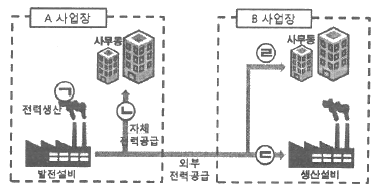
- ㉠
- ㉡
- ㉢
- ㉣
(정답률: 72%)
36. 전기사용 측면에서 최적가용기술이 아닌 것은?
- 에너지효율적인 모터 적용
- 압축공기시스템의 가변속도 드라이브 적용
- 공기압축기의 열회수
- 초고압의 전기아크로 적용
(정답률: 66%)
37. 온실가스 배출권거래제의 배출량 보고 및 인증에 관한 지침상 아디프산 생산시설 중 시클로헥산으로부터 아디프산을 합성하는 방법 중 하나인 Farbon 법에 관한 설명으로 옳지 않은 것은?
- 시클로헥산을 산화하여 시클로헥산올과 시클로헥사논을 만들고, 이 시클로헥산올과 시클로헥사논을 다시 산화하여 아디프산을 만든다.
- 혼합된 초산 망산, 바듐을 촉매로써 사용한다.
- 제2반응기로부터 생성물이 표백기로 들어가고 용존 NOx가스는 공기와 수증기로 인해 아디프산 및 질산 용액으로부터 탈기된다.
- 부산물의 생성이 없고, 아디프산 및 질산용액은 증류되어 최종산물(결정)이 된다.
(정답률: 59%)
38. 국가 온실가스 배출량 산정방식 중 가축분뇨에 대한 메탄(CH4)량 산정 시 필요한 자료가 아닌 것은?
- 가축의 종류
- 가축 종류별 두수
- 가축 종류별 수명
- 가축 종류별 분뇨의 메탄 배출계수
(정답률: 66%)
39. 온실가스 배출권ㄹ거래제의 배출량 보고 및 인증에 관한 지침상 시멘트 생산 공정 중 다량의 온실가스를 발생하는 시설(공정)로 가장 적합한 것은?
- 가스회수시설
- 소성시설
- 접촉 개질시설
- 세척시설
(정답률: 63%)
40. 이동연소(항공)의 Tier 1 배출량 산정방법론에서 “항공사업법 제 44조”에 따라 항공기취급업을 등록한 계열회사로부터 항공기 지상조업 지원을 받는 경우의 연료사용량 보정계수?
- 0.0461
- 0.0251
- 0.0215
- 0.0164
(정답률: 49%)
3과목: 온실가스 산정과 데이터 품질관리
41. 온실가스 배출활동은 직접배출과 간전배출로 구분된다. 다음 중 직접배출에 해당되지 않는 것은?
- 마그네슘 생산 시 배출
- 폐기물 소각에 의한 배출
- 자동차의 연료사용으로 인한 배출
- 외부에서 공급받은 전기의 사용
(정답률: 62%)
42. 연속 측정에 따른 배출량 산정방법에 대한 설명 중 틀린 것은?
- 30분 배출량은 g 단위로 계산하고, 소수점 이하는 버림 처리하여 정수로 산정한다.
- 월 배출량은 g 단위의 30분 배출량을 월 단위로 합산하고, kg 단위로 합산한 후, 소수점 이하는 버림 처리하여 정수로 산정한다.
- 측정 자료의 수치 맺음은 한국산업표준 KS Q 5002(데이터의 통계해석방법)에 따라서 계산한다.
- 연속측정 시 유량은 습 가스 기준으로 한다.
(정답률: 60%)
43. 배출량 산정ㆍ보고의 5대 원칙 중 다음 설명에 해당하는 것은?
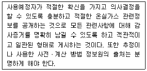
- 완전성
- 일관성
- 투명성
- 정확성
(정답률: 65%)
44. 배출활동별 배출량 산정방법론에 해당하지 않는 것은?
- 확보가능한 관련자료의 수준이 어느 정도인지를 조사ㆍ분석한 다음에 이에 적합한 선정방법을 결정하는 것이 합리적임
- 현재 우리나라에서 추진하고 있는 보고제에 의하면 배출량 규모에 따라 관리업체에서 적용하여야 할 최소 산정 Tier가 제시되어 있기 때문에 관리업체에서는 배출규모에 적합한 Tier적용이 가능하도록 자료를 확보하여야 함
- 산정등급은 4단계가 있으며, Tier가 높을수록 결과의 불확도가 높아짐
- 배출원의 온실가스 배출특성 및 확보 가능한 자료수준에 적합한 배출량 산정방법을 선정할 수 있는 의사결정도를 개발ㆍ적용하여야 함
(정답률: 60%)
45. 배출활동별 온실가스 배출량 등의 세부산정 기준에 대한 설명으로 가장 거리가 먼 것은?
- 사업장별 배출량은 정수로 보고한다.
- 배출활동별 배출량 세부산정 중 활동자료의 보고값은 소수점 넷째자리에서 반올림하여 셋째자리까지로 한다.
- 활동자료를 제외한 매개변수의 수치맺음은 센터에서 공표하는 바에 따른다.
- 사업장 고유 배출계수 개발 시 활동자료 측정주기와 동 활동자료에 대한 조성분석주기를 기준으로 산술평균을 적용한다.
(정답률: 61%)
46. 관리토양에서 직접적인 N2O 배출의 활동자료로 사용할 수 없는 것은?
- 농작물 생산량
- 석회질 빌의 연간 사용량
- 가축두수
- 유기질 비료의 시비량
(정답률: 48%)
47. 온실가스 배출권거래제 운영을 위한 검증 지침상 온실가스 배출량의 산정결과와 관련하여 정형화된 양을 합리적으로 추정한 값의 분산특성을 나타내는 정도는?
- 리스크
- 중요성
- 합리적 보증
- 불확도
(정답률: 65%)
48. 온실가스 배출권거래제의 배출량 보고 및 인증에 관한 지침상 굴뚝연속자동측정기에 의한 배출량 산정방법 중 측정에 기반한 온실가스 배출량 산정은 어떤 값을 기반으로 하여 산출하는가?
- 건가스 기준의 30분 CO2 부피 평균농도(%)를 사용하여 산정
- 습가스 기준의 30분 CO2 부피 평균농도(%)를 사용하여 산정
- 건가스 기준의 10분 CO2 부피 평균농도(%)를 사용하여 산정
- 습가스 기준의 10분 CO2 부피 평균농도(%)를 사용하여 산정
(정답률: 65%)
49. 모니터링 유형 중 C-4형에 관한 설명으로 알맞지 않은 것은?
- 데이터의 누락이 발생할 경우 배출시설의 활동자료인 “연료(원료) 사용량”에 상관관계가 가장 높은 활동자료를 선정하여 이를 바탕으로 추정의 타당성을 설명하여야 한다.
- 추정식은 다음과 같이 계산된다.
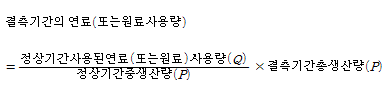
- 고장난 측정기기의 유량측정값을 활용하여 추정할 수 있다.
- 각각의 누락데이터에 대한 대체 데이터를 활용ㆍ추산하여 활동자료를 결정하는 방법이다.
(정답률: 65%)
50. 온실가스 배출권거래제의 배출량 보고 및 인증에 관한 지침상 산정등급(Tier)과 배출계수 적용에 관한 설명으로 가장 거리가 먼 것은?
- Tier 1 –IPCC 기본 배출계수 활용
- Tier 2 – 국가고유 배출계수 활용
- Tier 3 – 사업장ㆍ배출시설별 배출계수 사용
- Tier 4 – 전 세계 공통의 배출계수 사용
(정답률: 64%)
51. 온실가스 배출권거래제의 배출량 보고 및 인증에 관한 지침상 아디프산 생산량이 320t일 때(감축기술은 촉매분해방법 적용), 발생되는 온실가스 배출량(tCO2-eq)은?
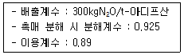
- 3458.07
- 3874.92
- 4338.02
- 5260.08
(정답률: 50%)
52. 모니터링 계획 작성 시에 관리업체는 배출활동별 배출량 산정방법론을 준수하고, 배출량 산정과 관련된 활동자료, 매개변수 및 사업장 고유배출계수의 정확성과 신뢰성이 향상될 수 있도록 모니터링 계획을 작성해야 하는데 이 계획을 작성하는데 여러 가지 원칙이 있다. 다음 중 모니터링 계획 작성 시 해당되지 않는 원칙은?
- 완전성
- 준수성
- 일관성
- 보수성
(정답률: 50%)
53. 관리업체는 명세서를 작성할 때 녹색성장기본법에 정의된 온실가스에 대하여 온실가스 배출 유형을 구분하여 법인, 사업장, 배출시설 및 배출활동별로 온실가스 배출량을 산정하여야 한다. 명세서 작성 시 구분하여야 할 온실가스 배출 유형으로 적절한 것은?
- 직접배출, 간접배출
- A유형, B유형, C유형, D유형
- 고정연소, 이동연소, 외부 전기 사용, 공정배출
- Tier1, Tier2, Tier3
(정답률: 63%)
54. 사업장에서 B-C유의 연간 사용량이 50만kL라고 할 경우, 산정방법 및 매개변수의 산정등급이 올바르게 연결된 것은?
- 산정방법 : 3, CO2 배출계수 : 3, 순발열량 : 3
- 산정방법 : 3, CH4 배출계수 : 3, 산화계수 : 3
- 산정방법 : 1, CO2 배출계수 : 1, 산화계수 : 1
- 산정방법 : 2, CO2 배출계수 : 2, 산화계수 : 2
(정답률: 52%)
55. 고정연소(고체연료)의 보고대상 시설 중 일반보일러 시설에 관한 설명으로 알맞지 않은 것은?
- 일반보일러 시설은 연료의 연소열을 물에 전달하여 증기를 발생시키는 시설을 말한다.
- 일반보일러 시설은 크게 물 및 증기를 넣는 철제용기(보일러 본체)와 연료의 연소장치 및 연소실(화로)로 나눌 수 있다.
- 원통형보일러는 주물계의 Section을 몇 개 전후로 짜 맞춘 보일러로써 하부는 연소실, 상부는 굴뚝으로 되어 있다.
- 수관식보일러는 작은 직경의 드럼과 여러 개의 수관으로 나누어져 있고 수관 내에서 증발이 일어나도록 되어 있으며 고압, 대용량으로 적합하다.
(정답률: 58%)
56. 다음 Scope 분류 및 그에 대한 배출활동이 잘못 연결된 것은?
- Scope 1 : 이동연소, 철강생산, 공공하수처리
- Scope 1 : 폐기물 소각, 고정연소, 시멘트생산
- Scope 2 : 구입 증기, 구입 전기, 구입 열
- Scope 3 : 종업원 출퇴근, 구매된 원료의 생산 공정배출, 공장 내 기숙사 난방
(정답률: 60%)
57. A관리업체 하수를 다음과 같은 조건에서 처리하고자 할 때 N2O 배출에 따른 온실가스 연간 배출량(tCO2-eq/yr)에 가장 가까운 값은? (단, 온실가스 배출권거래제의 배출량 보고 및 인증에 관한 지침기준, 반출슬러지는 고려하지 않는다.)
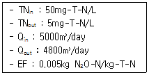
- 200
- 300
- 400
- 500
(정답률: 52%)
58. 온실가스ㆍ에너지 목표관리제 하에서 운영경계 설정 시 운영경계 구분에서 다음 중 Scope2에 해당하는 사항은?
- 외부에서 구매한 전기 또는 열
- 고정연소 배출원
- 이동연소 배출원
- 하ㆍ폐수 처리시설 배출원
(정답률: 60%)
59. 고체연료의 고정연소 시 발생되는 온실가스 배출량을 산정하기 위해 Tier 3 방법론에 따라 산화계수(f)를 개발하여 사용할 경우 개발에 요구되는 인자가 아닌 것은?
- 재 중 탄소의 질량 분율
- 연료 중 재의 질량 분율
- 연료 중 탄소의 질량 분율
- 연료의 순발열량
(정답률: 57%)
60. 온실가스 배출권거래제의 배출량 보고 및 인증에 관한 지침상 비선택적 촉매환원법을 사용하여 질산 350t을 생산하였다. 이 때 발생되는 온실가스 배출량(tCO2-eq)은?
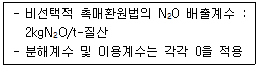
- 156
- 217
- 340
- 412
(정답률: 50%)
4과목: 온실가스 감축관리
61. 외부감축 실적과 관련한 내용으로 틀린 것은?
- 관리업체는 업체의 조직경계 외부에서 온실가스를 감축ㆍ흡수ㆍ제거하는 사업을 수행하고 그 실적을 관리업체의 목표 이행 실적으로 사용할 수 있다.
- 외부감축사업과 외부감축실적의 인정은 온실가스 감축 국가목표를 달성하는데 필요한 제반사항과 그 범위 내에서 고려되어야 한다.
- 외부감축실적은 관련된 국제 기준과 지침을 고려하여 추진되어야 하며, 관리업체의 감축의무가 특정 업체 및 부문에 전가되지 않도록 투명하고 공정하게 관리되어야 한다.
- 외부감축사업의 유형 및 방법론, 외부감축사업의 타당성 평가 및 등록, 외부감축실적의 산정ㆍ모니터링ㆍ검증, 인정방법, 외부감축실적 인증서의 발급ㆍ등록ㆍ관리 등에 관한 구체적인 사항은 관장기관이 정하여 고시한다.
(정답률: 33%)
62. 자발적 감축사업의 기준 또는 내용으로 틀린 것은?
- VCS, GS 등 크레딧의 가격은 기준과 사업유형에 따라 상이함
- 높은 발행비용이 소모되므로 품질에 대한 신뢰성이 재고됨
- 외부 감축사업 CDM/JI 크레딧을 허용하지만 국가별로 그 비율을 일정하게 한정하고 있음
- 크레딧의 인증 절차 등이 CDM처럼 엄격할수록 자발적 감축사업 크레딧에 대한 국제적 신뢰도는 제고됨
(정답률: 49%)
63. 화학산업에서 우선적으로 추진해야 할 온실가스 감축 수단은 에너지 효율을 높이고 화석연료 사용을 최소화 하는 것이다. 다음 중 에너지 효율 개선을 위해 적용할 수 있는 “공정개선”과 가장 거리가 먼 것은?
- 에너지 효율 제고를 위해 제조법의 전환 및 공정 개발
- 설비 및 기기효율의 개선
- 폐 에너지의 회수
- 배출량 원단위 지수 개선
(정답률: 63%)
64. CDM사업 등록절차별 단계 수행 및 수행내용과 설명의 연결로 옳지 않은 것은?
- 타당성 확인(Validation) - 사업에 적합한 DOE 선정, DOE에 타당성 확인 시 필요한 자료 제공, DOE 현장심사 준비
- CDM 사업등록 – 자료송부, CDM 사업화 방안 도출, DOE를 통한 UNFCCC에 발급 요청
- 운전 및 모니터링, 모니터링보고서 작성 – 사업운전 데이터 수집, 실제 배출감축량의 산정, 배출감축량 확보에 대한 보고서 작성
- 검증(Verification) - 사업에 적합한 DOE 선정, DOE 검증 시 필요한 자료 제공, DOE 지적사항에 대한 해결방안 도출
(정답률: 42%)
65. 산업 및 주거용으로 이용되는 높은 등급의 석탄으로서 일반적으로 10% 이하의 휘발물과 높은 탄소 함유량(약 90%의 고정된 탄소)을 가지는 연료는?
- 갈탄
- 무연탄
- 점결탄
- 역청탄
(정답률: 70%)
66. 온실가스 배출량 등의 산정 결과와 관련하여 정량된 양을 합리적으로 추정한 값의 분산특성을 나타내는 정도를 의미하는 것은?
- 정확도
- 정밀도
- 분산특성
- 불확도
(정답률: 60%)
67. 온실가스 배출권거래제의 조기감축실적 인정기준으로 옳지 않은 것은?
- 조기감축실적은 국내ㆍ외에서 실시한 행동에 의한 감축분에 대하여 그 실적을 인정한다.
- 조기감축실적은 관리업체의 조직경계 안에서 발생한 것에 한하여 그 실적을 인정한다.
- 조기감축실적은 관리업체 사업장 단위에서의 감축분 또는 사업단위에서의 감축분에 대하여 인정할 수 있다.
- 조기감축실적으로 인정되기 위해서는 조기행동으로 인한 감축이 실제적이고 지속적이어야 하며, 정량화되어야 하고 검증 가능하여야 한다.
(정답률: 52%)
68. CCS 기술 중 CO2 저장 기술의 구분에 해당되지 않는 것은?
- 지중 저장
- 해양 저장
- 지상 저장
- 회수 저장
(정답률: 60%)
69. 투자분석은 CDM사업 관련 수입을 제외하고 제안된 CDM사업이 경제적 또는 재정적으로 이익이 없음을 증명하는 단계이다. 다음 중 사업의 경제적 추가성을 입증하는 분석방법으로 적절하지 않는 것은?
- 단순비용 분석
- 투자비교 분석
- 벤치마크 분석
- 원가 분석
(정답률: 44%)
70. 각 국이 자국에 합당하다고 판단하는 감축행동을 비구속적으로 등록하고 이를 이행하면 크레딧을 부여하는 것으로서, 각 국가의 역량 차이를 인정하는 새로운 유형의 감축 메커니즘은?
- NAMA
- GGGI
- IPCC G/L
- NGMS
(정답률: 60%)
71. 탄소자원화(CCU)에 대한 개념으로 관계가 가장 적은 것은?
- CO2만을 선택적으로 분리 포집하는 기술을 의미한다.
- 화학제품의 원료로 전환하는 기술을 의미한다.
- 광물의 탄산화로 전환하는 기술을 의미한다.
- 바이오 연료 등으로 전환하는 기술을 의미한다.
(정답률: 47%)
72. CDM 사업은 조림 및 재조림 등을 통해 온실가스를 흡수하는 사업도 포함하고 있다. 흡수원의 범위와 관계가 먼 것은?
- 조림 규모는 나무의 종류에 따라 차이가 있으나, 통상 300 ~ 1000ha 정도
- 재조림 사업은 1990년 이전에 산림이 아닌 토지를 산림으로 전환하는 사업
- 조림 CDM 사업은 50년간 산림이거나 산림이 아닌 토지를 산림으로 전환하는 사업
- 소규모 조림, 재조림 CDM 사업은 CDM 사업유치국에서 연간 8000ton 이하를 순흡수하는 사업에 적용
(정답률: 47%)
73. 연소공정의 아산화질소(N2O) 처리기술에 대한 설명으로 옳지 않은 것은?
- 유동층연소에서 발생하는 아산화질소를 저감시키기 위해서는 유동층의 온도를 높여서 아산화질소의 열분해를 유도하는 방법이 있다.
- 생선된 아산화질소의 분해기술은 고온처리와 저온처리로 나눌 수 있는데, 고온처리에는 기상열분해와 매체입자에 의한 접촉분해방법이 있고, 저온처리는 SCR 혹은 SNCR 등 촉매분해방법이 있다.
- 유동층연소에서 배출되는 아산화질소를 촉매분해, N2O-SCR 등의 방법으로 처리할 수 있다.
- 폐기물 소각공정에서 석회석을 사용한 아산화질소 처리기술이 가장 보편적으로 적용되고 있다.
(정답률: 63%)
74. 이산화탄소 저장기술에 대한 설명 중 틀린 것은? (문제 오류로 가답안 발표시 1번이 답안으로 발표되었으나, 확정답안 발표시 1번, 4번이 정답처리 되었습니다. 여기서는 가답안인 1번을 누리면 정답 처리 됩니다.)
- 포집된 이산화탄소를 영구 또는 반영구적으로 격리하는 것으로 지정저장, 해양저장, 지표저장 등으로 구분할 수 있다.
- 석유 및 천연가스 회수와 석탄층 메탄가스 회수를 증진시키는 부가가치 효과가 있다.
- 이산화탄소를 해양에 저장하는 기술은 해양에 방출하는 방법으로 해저 3000m이하에 분사함으로써 이산화탄소 하이드레이트 형태로 저장시키는 방법이다.
- 지표저장법은 플루오르나 수소와 같은 이산화탄소 첨가 가능 광물에 반응시켜 화학적으로 자정하는 방법이다.
(정답률: 62%)
75. 온실가스 감축효과가 유발되는 원리에 따라 분류할 수 있는 프로젝트 유형을 잘못 설명하고 있는 것은?
- 재생에너지 대신 값이 저렴하고 구하기 쉬운 화석연료로 대체 사용
- 고탄소 연료대신 저탄소 연료로의 대체 및 원료의 전환
- 에너지 효율을 향상시키는 활동
- 온실가스 파괴 및 배출 회피활동
(정답률: 59%)
76. 광흡수층에 따른 태양전지를 분류할 때 비실리콘계 태양전지가 아닌 것은?
- 다결정 실리콘 태양전지
- 유기 태양전지
- 염료감은 태양전지
- 페로브스카이트 태양전지
(정답률: 55%)
77. 합성불확도 산정 방법인 몬테카를로 시뮬레이션(Tier 2)을 사용하기에 적절한 경우로 가장 거리가 먼 것은?
- 불확도가 작을 경우
- 알고리즘이 복잡한 경우
- 인벤토리가 작성된 연도별로 불확도가 다를 경우
- 분포가 정규분포를 따르지 않을 경우
(정답률: 54%)
78. CDM 사업에서 절차와 수행주체가 바르게 연결된 것은?
- CDM 사업 발굴 - 국가승인기구
- 타당성 확인 - 사업자
- 검증 및 인증 - CDM운영기구
- CER 배분 – CDM 집행위원회
(정답률: 25%)
79. A관리업체는 다음과 같은 기준년도 배출량을 가진 C시설에 대한 시설규모를 최초 결정하고자 한다. 이때 적용되는 배출량은? (단, 단위 tCO2 eq/년)
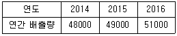
- 51000
- 49333
- 49000
- 48000
(정답률: 57%)
80. 배출권 거래제의 사용형태에 대한 다음 설명에 해당하는 것은?
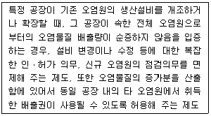
- Carbon Neutral
- Netting
- Borrowing
- Banking
(정답률: 52%)
5과목: 온실가스관련 법규
81. 관리업체가 온실가스 배출량 및 에너지 사용량 명세서를 거짓으로 작성하여 보고한 경우 과태료 금액은?
- 300만원
- 500만원
- 700만원
- 1000만원
(정답률: 55%)
82. 온실가스 배출량 및 에너지 소비량 등의 보고에 관한 설명으로 ( )에 알맞은 것은?
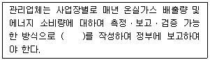
- 실적서
- 명세서
- 운영보고서
- 시행보고서
(정답률: 63%)
83. 주무관청이 검증기관의 지정을 취소하거나 1년 이내의 기간을 정하여 업무의 정지 또는 시정을 명할 수 있다. 다음 중 지정을 취소하는 사유에 해당하지 않는 것은?
- 거짓이나 부정한 방법으로 지정을 받은 경우
- 검증기관이 폐업ㆍ해산 등의 사율로 사실상 영업을 종료한 경우
- 정당한 사유 없이 전문분야 추가과정 교육을 이수하지 않은 경우
- 고의 또는 중대한 과실로 검증업무를 부실하게 수행한 경우
(정답률: 56%)
84. 온실가스ㆍ에너지 목표관리 운영 등에 관한 지침상 매년 조기감축실적으로 인정할 수 있는 전체 총량은 얼마로 하는가?
- 전체 관리업체 배출허용량의 1%
- 전체 관리업체 배출허용량의 5%
- 전체 관리업체 배출허용량의 10%
- 전체 관리업체 배출허용량의 50%
(정답률: 61%)
85. 다음 설명에서 ( )에 들어갈 내용은?
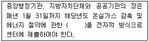
- 목표 이행실적
- 목표 이행계획
- 배출권 이행계획
- 배출량 적합성평가 계획
(정답률: 46%)
86. 배출량 산정 계획 작성 방법에 포함되어야 할 사항으로 가장 거리가 먼 것은?
- 벤치마크 계수 개발계획
- 조직경제 결정
- 배출시설별 모니터링 대상 및 측정지점 결정
- 배출활동 및 배출시설 파악
(정답률: 54%)
87. 배출량 산정결과의 품질을 평가 및 유지하기 위한 일상적인 기술적 활동의 시스템을 무엇이라 하는가?
- 품질관리(QC)
- 품질보증(QA)
- 품질감리
- 내부감사(Audit)
(정답률: 67%)
88. 온실가스 배출권거래제의 배출량 보고 및 인증에 관한 지침상 배출량 산정 계획 작성 원칙이 아닌 것은?
- 준수성 및 완전성
- 일관성 및 투명성
- 일치성 및 관련성
- 품질관리 및 품질보증
(정답률: 49%)
89. 공공부문 온실가스ㆍ에너지 목표관리 운영 등에 관한 지침상 공공부문에 해당하지 않는 것은?
- 공공기관의 운영에 관한 법률에 따른 공공기관
- 지방공기업법에 따른 지방공사 및 지방공단
- 국립대학병원 설치법, 국립대학치과병원 설치법, 서울대학교병원 설치법 및 서울대학교치과병원 설치법에 따른 병원
- 고등교육법에 따른 국립대학, 공립대학 및 사립대학
(정답률: 58%)
90. 배출권의 차입한도는 해당 계획기간의 1차 이행연도인 경우 해당 할당대상업체가 환경부장관에게 제출해야 하는 배출권의 얼마로 하는가?
- 100분의 10
- 100분의 15
- 100분의 20
- 100분의 25
(정답률: 32%)
91. 저탄소 녹색성장 기본법령상 국가 온실가스 감축 목표는 2030년의 국가 온실가스 총배출량을 2017년의 온실가스 총배출량의 얼마만큼 감축하는 것으로 하는가?
- 1000분의 120
- 1000분의 244
- 1000분의 375
- 1000분의 455
(정답률: 52%)
92. 배출권을 거래하는 자가 주무관청에 거래 신고서를 전자적 방식으로 제출할 때 포함되지 않는 사항은?
- 거래한 배출권의 종류, 수량 및 가격
- 양도인과 양수인 간의 배출권 거래 합의에 관한 공증 서류
- 양수인의 배출권 거래계정을 등록한 자인지 여부
- 거래 일시, 거래자 정보 등 거래 내용의 확인을 위해 필요한 사항으로서 환경부장관이 정하여 고시하는 사항
(정답률: 63%)
93. 저탄소 녹색성장 기본법령상 정부가 범지구적인 온실가스 감축에 적극 대응하고 저탄소 녹색성장을 효율적ㆍ체계적으로 추진하기 위하여 중장기 및 단계별 목표를 설정하고 그 달성을 위하여 필요한 조치를 강구해야 하는 사항과 가장 거리가 먼 것은?
- 온실가스 감축 목표
- 에너지 절약 목표 및 에너지 이용효율 목표
- 자원순환 촉진 목표
- 신ㆍ재생에너지 보급 목표
(정답률: 57%)
94. 온실가스 배출활동별 산정방법론 중 잘못된 것은?
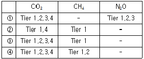
- 아디프산 생산 산정방법론
- 칼슘카바이드 생산 산정방법론
- 석유화학제품 생산 산정방법론
- 합금철 생산 산정방법론
(정답률: 43%)
95. 배출권거래제에서 외부사업 온실가스 감축량 인증을 위하여 외부사업에 대한 타당성 평가항목으로 잘못된 것은?
- 인위적으로 온실가스를 줄이기 위하여 일반적인 경영 여건에서 할 수 있는 노력이 있었는지 여부
- 온실가스 감축사업을 통한 온실가스 감축 효과가 장기적으로 지속 가능한지 여부
- 온실가스 감축사업이 고시에서 정하는 기준과 방법을 준수하는지 여부
- 온실가스 감축사업을 통하여 계량화가 가능할 정도로 온실가스 감축이 이루어질 수 있는지 여부
(정답률: 59%)
96. 우리나라 배출권거래제법에서 정한 수수료 납부 대상에 해당하는 것은?
- 명세서 제출
- 배출권의 인증
- 배출권 거래계정 등록 신청
- 이의신청
(정답률: 55%)
97. 저탄소 녹색성장 기본법령상 저탄소 녹색성장 추진의 기본원칙에 해당하지 않는 것은?
- 정부는 시장기능을 최대한 활성화하여 정부가 주도하는 저탄소 녹색성장을 추진한다.
- 정부는 녹색기술과 녹색산업을 경제성장의 핵심 동력으로 삼고 새로운 일자리를 창출ㆍ확대할 수 있는 새로운 경제체제를 구축한다.
- 정부는 사회ㆍ경제 활동에서 에너지와 자원이용의 효율성을 높이고 자원순환을 촉진한다.
- 정부는 국가의 자원을 효율적으로 사용하기 위하여 성장잠재력과 경쟁력이 높은 녹색기술 및 녹색산업분야에 대한 중점 투자 및 지원을 강화한다.
(정답률: 29%)
98. 온실가스 배출권의 할당 및 거래에 관한 법률상 배출권 할당위원회에서 심의ㆍ조정하는 사항과 가장 거리가 먼 것은?
- 할당계획에 관한 사항
- 시장 안정화 조치에 관한 사항
- 배출량의 인증 및 상쇄와 관련된 정책의 조정 및 지원에 관한 사항
- 독립적인 국내 탄소시장 체제 확립에 관한 사항
(정답률: 59%)
99. 저탄소 녹색성장 기본법령상 국토교통부장관이 교통부문의 온실가스 감축, 에너지 절약 및 에너지 이용효율 목표를 수립ㆍ시행 시 포함해야 하는 사항과 거리가 먼 것은?
- 에너지 종류별 온실가스 배출권 실거래 현황
- 연차별 온실가스 감축, 에너지 절약 및 에너지 이용효율 목표와 그 이행계획
- 5년 단위의 온실가스 감축, 에너지 절약 및 에너지 이용효율 목표와 그 이행계획
- 자동차, 기차, 항공기, 선박 등 교통수단별 온실가스 배출 현황 및 에너지 소비율
(정답률: 58%)
100. 할당대상업체는 이행연도 종료일로부터 얼마 이내에 인증받은 온실가스 배출량에 상응하는 배출권을 주무관청에 제출해야 하는가?
- 1개월
- 3개월
- 5개월
- 6개월
(정답률: 52%)